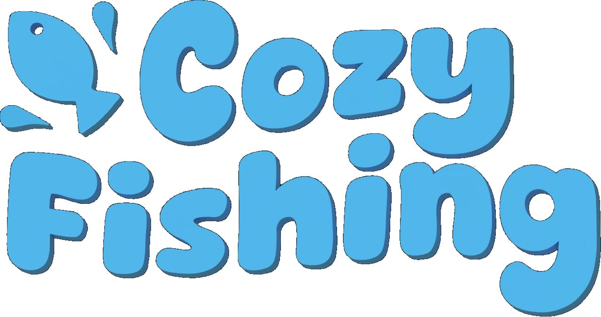
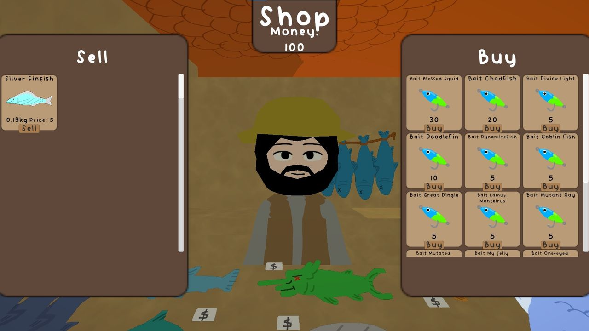
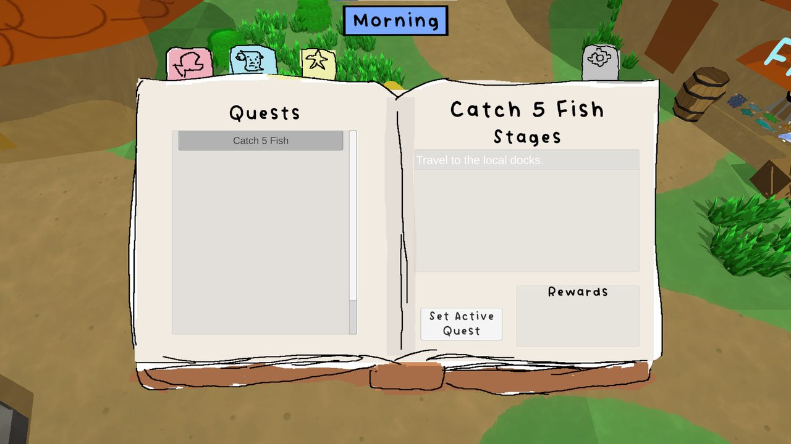
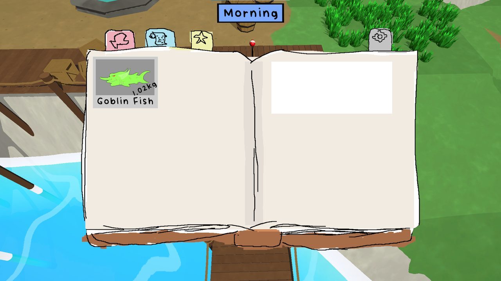
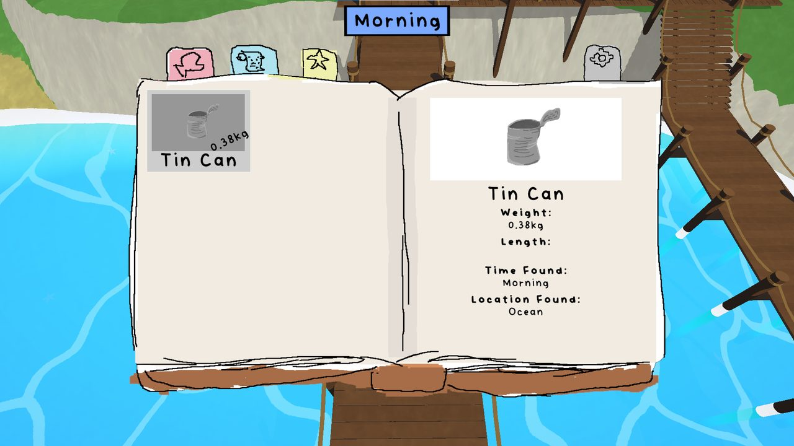
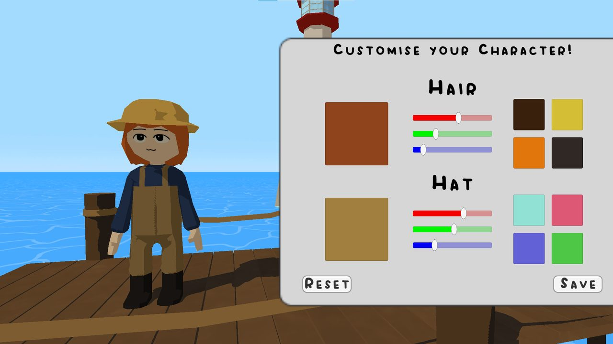
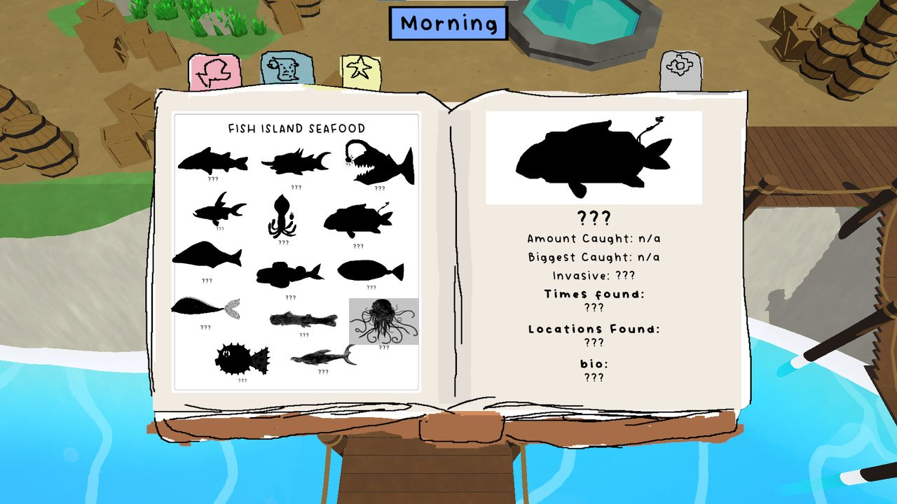
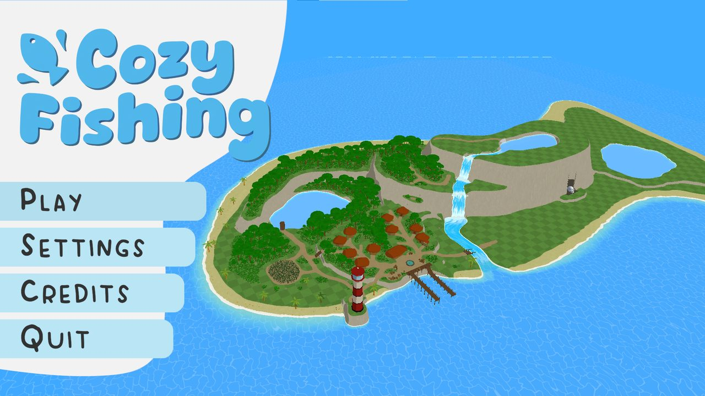
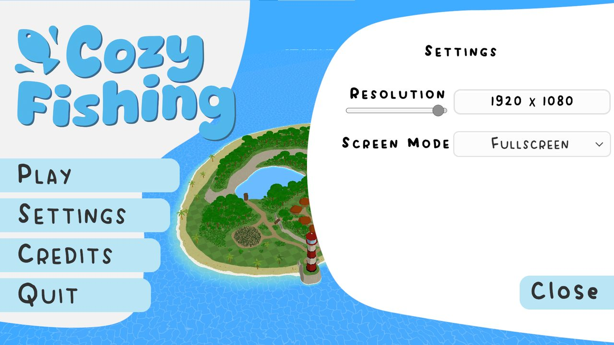
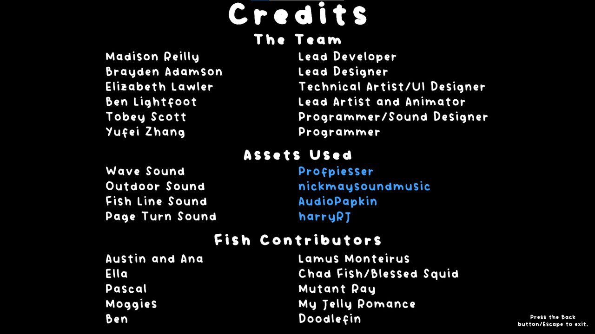

2025 · 项目
Cozy Fishing
六人团队、Scrum 与 Git Flow 下的休闲钓鱼游戏
PC / 主机的休闲风格钓鱼游戏：探索岛屿、接任务、在多种钓鱼小游戏里磨练技巧。我负责商店、鱼类图鉴、任务、主菜单 / 暂停 / 设置等系统的界面逻辑与交互原型——信息架构、交互流程与功能实现由我完成，组员在此基础上做视觉优化。脚本刻意写成可复用、可扩展的形式，让设计团队不用改核心系统就能加内容。
- 担任
- 界面系统设计与实现（商店 / 图鉴 / 任务 / 设置）
- 团队
- 6 人团队（In2Games 行业合作课程）
- 周期
- 2025.07 – 2025.10
- 引擎 / 工具
- Unity + Maya / Blender
- 类型
- 休闲游戏 · 团队项目
- 状态
- 已完成课业，产出可玩 Demo（PROD322 校企合作项目）

Overview
项目概述
Cozy Fishing 是一款 PC / 主机的休闲风格钓鱼游戏。玩家可以探索一座岛屿、接取任务， 并通过几种不同主题的钓鱼小游戏磨练技巧。整体调性温馨，同时强调环保与保育主题。
| 成员 | 专业 | 主要职责 |
|---|---|---|
| Ben | 动画 | 建模与动画——最终版本中所有动画以及玩家模型都出自他 |
| Brayden | AIGD | 程序与玩法设计——最终版本里大部分小游戏由他设计 |
| Liz | AIGD | 技术美术、建模、2D 美术——最终版本的全部关卡设计、shader，以及大部分 2D 与部分 3D 资产 |
| Madi | AIGD + 软件工程 | Git 管理与程序——通过代码审查流程让代码库与 git 流程保持干净 |
| Tobey | AIGD | 程序与音效设计——最终版本中所有音效都由他设计与实现 |
| Yufei | AIGD | 界面系统的设计与实现——商店、图鉴、任务、设置等系统的信息架构、交互流程与功能原型 |
My Contribution
我的工作
我负责的是界面系统的逻辑层：商店、图鉴、任务与设置这些系统的 信息架构、交互流程与功能原型都由我设计与实现——做出来的是带实际功能、 可直接游玩的版本，也就是最终呈现的形态。组员在此基础上做视觉优化 （重新布局、把 UI 素材替换为她自己绘制的 sprite）。
此外我把这些系统的脚本写成数据驱动、可扩展的形式， 让设计团队不必改动核心代码就能加新内容——这也是为什么同一套图鉴界面 既能装下鱼类，也能装下钓上来的杂物。
我实现的系统
- 图鉴 / 记录系统（Fish Log）：记录玩家的每一次收获，包含名称、重量、 长度、发现时段与地点。这套结构是数据驱动的——同一套界面既承载鱼类， 也承载钓上来的杂物（例如 0.38 kg 的罐头），新增一类收集品不需要改界面。 条目在每次成功上钩后动态更新，玩家会主动去凑齐尚未解锁的剪影。
- 任务系统（Quests）：承接任务、展示分阶段目标与阶段奖励。 与图鉴、商店串成"接任务 → 探索与钓获 → 交付领奖 → 买更好鱼饵"的循环。
- 背包与物品管理：物品的存储与检索，包括槽位处理、界面更新， 以及与其他玩法系统对接的标记（tagging）逻辑。
- 商店（Shop）：买卖两侧布局把渔获、货币与鱼饵连接起来，构成经济循环。 每种鱼饵对应特定鱼种，所以"买什么饵"本身就是玩家的策略选择， 而不只是数值升级。
- 钓鱼小游戏原型：设计 DDR 式钓鱼小游戏（以节奏输入承载轻量化操作），完成原型后交由组员继续精细打磨。
- 主菜单：开始 / 设置 / 退出，并确保场景切换顺畅。
- 暂停菜单：继续 / 退出 / 设置集成，并接入 Unity 新的 Input System。
- 设置 UI：为玩法与音频提供可配置面板，并用脚本支持基于场景的切换。
- 角色自定义：同时提供滑条式 RGB 控制与预设颜色按钮，用于调整头发与帽子的颜色。 这个系统直接把改动应用到材质上，并支持实时预览。
- 抓钩重做（Grapple Rework）：在冲刺阶段重构了抓钩手感与判定， 让移动机制与关卡的空间设计对齐。








以上界面的信息架构、交互流程与功能实现由我完成——交付的是带实际功能、 可直接游玩的原型，也就是最终呈现的形态。组员在此基础上做视觉优化 （重新布局、把 UI 素材替换为她自己绘制的 sprite）。
制作名单与团队
项目为六人团队，各自负责的模块在制作名单中署名。除程序与界面系统外， 名单也完整记录了项目使用的外部音效素材与鱼类设计贡献者—— 这是我坚持保留的部分：用了别人的东西，就要写清楚是谁的。

Process
流程与协作
工具
- Discord：按正在开发的机制分频道，并用于组织会议
- Trello：按 sprint 分区，任务自分配，由全队共同维护而不是交给某一个人
- EngGit（坎特伯雷大学的 GitLab）：行业标准的 Git Flow
- 引擎 Unity；建模以 Maya 为主、Blender 处理较小的模型
流程
- Scrum：feature 拆成 story，story 再拆成任务，以两周为一个 sprint
- 每个 sprint 首周二 sprint planning；周五与周二 stand-up；最后周五 sprint review（对客户）与 retrospective
- 所有新功能在独立分支开发，完成后提 merge request 进 develop，由 Git 负责人 review 后合并
- sprint 末把 develop 合并进 main，代表最新可玩版本
- 统一代码风格文档：变量命名、类与方法文档、方法排序顺序
Retrospective
团队复盘
这个项目最有价值的部分是团队对流程问题的复盘。以下是我认为最值得记住的几条， 以及各自的处理方式。
| 问题 | 根因 | 处理 / 结论 |
|---|---|---|
| 沟通不畅 有人需要把别人的私有变量改成公开，结果用了反射这种恶劣写法 |
改动他人代码前没有沟通 | 代码审查中记录、分别与两人沟通，并在 retrospective 上重申： 可以改别人的代码，但先跟写它的人说一声 |
| 合并请求堆在最后一刻 周五中午要出可运行版本，所有 MR 都堆在周五早上 |
功能截止时间与版本发布时间没有错开 | 最后一个 sprint 把 MR 截止提前到周二上午，给审查与修改留出时间 |
| 提交过少 一旦需要修改，可能整个 sprint 的工作被抹掉 |
团队内 Git 经验差距大，提醒一次只能维持一周 | 结论：坐下来手把手带一遍流程，而不是靠开会提醒 |
| 美术资产优先级错位 先做了容易但非必要的模型，关键元素到最终版仍是占位 |
初期只给代码功能排了优先级 | 美术资产应在开发早期就进入优先级排序 |
| 贡献不均 有成员明显偏少，等于团队以更少的人在工作 |
自组织的 Scrum 对所有人都有效是个假设 | 试过小截止日期、个人截止日期、人员轮换，均未根治； 不同的人需要不同的管理方式 |
| 客户中途停止沟通 第二学期客户不再回消息，连课堂汇报也不出席 |
团队无法再校准方向 | 最终成品符合团队对简报的理解，但不一定符合客户的预期 |
| 单点故障 只有一名动画师、一名技术美术、一名能可靠合并代码的人 |
关键技能集中在个人身上 | Git 单点可培训解决；动画与技术美术需要数年积累， 只能在 sprint 规划时把病假算进去 |
两个技术问题
- 主场景冲突：所有人都在同一个场景里工作，inspector 变量频繁被覆盖，越到后期越痛苦； 部分成员做完的分支干脆不合并，让 Git 负责人还要手工处理。 回头看在独立场景里工作会好很多。
- Maya 到 Unity 的动画导出：绑定与动画转换出问题且难以定位，动画师有数周无法推进。 根因是从 Maya 导入 Unity 时的缩放（scaling）错误，定位后同类问题再没出现过。
Takeaways
总结
做得好的（值得沿用到今后）
- Git Flow：让我们始终拥有一个稳定的可玩版本。虽然合并有麻烦，但通过时间与培训可以缓解，整体是净收益。
- Scrum：对项目规划帮助极大，让团队能掌握自己的进度，也让整个项目看起来没那么可怕。
- 统一代码风格：在项目开始就定下一致的代码风格，让阅读他人的代码简单很多—— 这也是行业里普遍做这件事的原因。
应该改进的
- Git 经验不足：提交太少、只有一个人能合并与审查，根因都是缺少大规模项目的 Git 经验。
- 资产管线（Asset Pipeline）：美术资产耗时远超预期，原因是从建模软件到引擎的流转问题，以及优先级判断错误。 一条可靠的资产管线能避免其中大部分问题。
- 沟通：很多开发中的问题来自简单的沟通不畅。在会议之外更好地交流，本可以加快开发、避免浪费时间修 bug。
- 项目管理：一开始选择了 Scrum 的自组织方式，这对大多数团队有效，但不是对所有人都有效。 最后一刻提交 MR、功能没人主动认领，根源都是不同的人需要不同的管理方式。 未来应该针对个人调整管理风格，而不是套用一种统一风格。
结论
这个项目让所有成员获得了游戏设计行业的实际经验，也产出了一款可以放进作品集的完整作品。 未来的项目里，按工作板块（程序、美术等）而不是按人数来划分范围会更好—— 我们在美术与内容量上过度扩张了，把范围对齐到每位成员的实际技能会得到更好的最终产品。